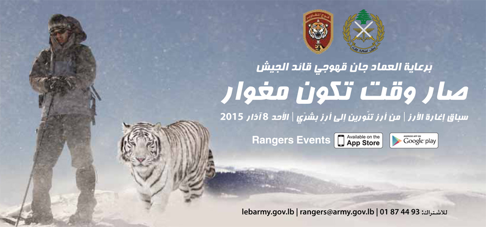
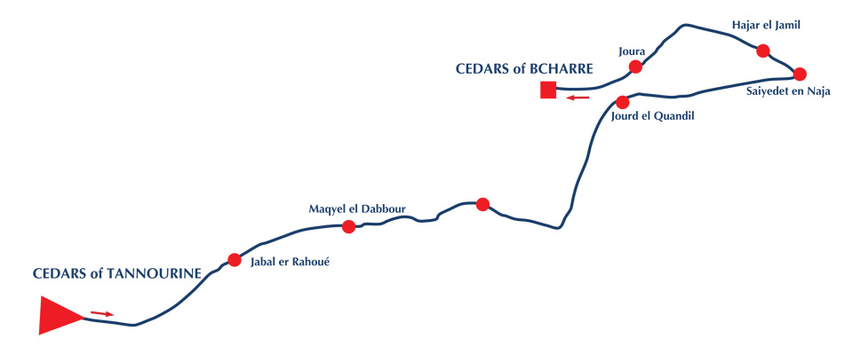

قوانين الإشتراك 1- المقدمة: إن اغارة الأرز هو سباق عسكري يمكن للمدنيين الاشتراك فيه. وهو عبارة عن سباق من أرز تنورين الى أرز بشري، على المشتركين اكماله بمختلف صعوباته وتدرجات ارتفاعه. هذا السباق ينظم للمرة السابعة من قبل فوج المغاوير وتحت رعاية قائد الجيش العماد جان قهوجي، وهو يشكل فرصة فريدة من نوعها، يلتقي بها المدنيون مع العسكريون لتجاوز طبيعة أرض فريدة من نوعها فوق مرتفعات أرز لبنان. على المشتركين في هذا السباق "RDC": - معرفة ودراسة طبيعة الأرض حيث يقام السباق. - التحضير الجسدي والنفسي لهذا السباق والالتزام بالتعليمات المحددة لهم قبل وخلال السباق. - التمتع بروح الفريق وروح المنافسة. [caption id="attachment_1102" align="alignnone" width="617"]
خريطة السباق[/caption] 2- معلومات عامة: يمكن أن تشارك فرق بعتاد الراكيت "Raquette" على ان تشترك بسباق الفئة الثالثة أ- يتضمن السباق 3 ثلاث مسالك، المسلك الأول يتراوح طوله حوالي 45 كلم مع فارق ارتفاع + 2300متر ، والثاني حوالي 30كلم مع فارق ارتفاع + 2200متر والثالث حوالي 18 كلم مع فارق ارتفاع + 1000متر. ب- نقطة الانطلاق مجاورة لغابة أرز تنورين والوصول غابة أرز بشري. ج- تتألف الفرق من ثلاثة متسابقين. د- للراغبين الاشتراك يجب ان يكونوا قد اكملوا الستة عشر من العمر. ه- حدد موعد السباق في 8 آذار 2015 عند الساعة الخامسة صباحاً. و- حدد موعد الايجاز في 7 آذار 2015 في مكان الانطلاق في تنورين الساعة 18،00. يليه عشاء قروي. ز- يمكن الاستفادة من النقليات المؤمنة في فوج المغاوير من ثكنة فوج المغاوير في روميه الى غابة ارز تنورين والعودة 3- الفئات: يشمل سباق اغارة الأرز فئتين من المشاركين: - الفئة الأولى بحيث عليها اكمال مسلك الـ 45 كلم مع فارق ارتفاع +2300 متر. - الفئة الثانية وعليها اكمال مسلك الـ 30 كلم مع فارق ارتفاع +2200 متر. - الفئة الثالثة وعليها اكمال مسلك الـ 18كلم مع فارق ارتفاع +1000 متر. 4- قواعد عامة: أ- على كل مشترك الالتزام بكافة التعليمات المعطاة قبل وخلال وبعد السباق. ب- على الفريق عبور خط الوصول بكافة المشاركين فيه، ويحتسب توقيت المشترك الأخير. ج- على كل فريق التزود بكافة حاجاته لاتمام السباق دون أية مساعدة خارجية. د- على كل فريق عبور نقاط الزامية، نقاط تأكد حيث تدون أرقام وأسماء الفرق المشاركة، وتوقيتهم حيث تتواجد العناية الطبية في حال الحاجة. 5- الإعتراضات: يمكن الاعتراض للسلطة المنظمة للسباق بعد النهاية وبإعتراض خطي ضمن مهلة نصف ساعة من انتهاء السباق. 6- عدم الاهلية: إن أية مخالفة للقوانين تفقد الفريق أهليته بمتابعة السباق، يمكن تسجيل المخالفة عند أية نقطة تأكد، كما يمكن للنقاط الطبية بعد الكشف على اصابة معينة تأكيد عدم اهلية المتسابق لإكمال السباق. 7- بطاقات الاشتراك: لكل متسابق بطاقة اشتراك تتضمن: - صورته - رقم الفريق - تصنيفه (مدني، عسكري) - لون المسلك ( 45 كلم ، 30 كلم، 16 كلم) - فئة دمه هذا اضافة الى رقم الفريق ليوضع على الحقيبة والرجل 8- الاشتراك: أ- على كل راغب في الاشتراك تعبئة قسيمة الاشتراك وايداعها في ثكنة المغاوير في روميه مع المستندات المطلوبة وهي: - صورة عن الهوية - صورة شمسية للمشترك - صورة عن التأمين - الاستمارة ب- يمكن الحصول على الاستمارة من ثكنة غسان رمان - رومية أو ثكنة إبراهيم سلوم – العاقورة أو ثكنة أميل رحمة -الأرز، كما يمكن الحصول عليها من خلال البريد الإلكتروني للجيش اللبناني، وتحت اسم إغارة الأرز حيث تتوفر المعلومات المطلوبة. ج- على كل مشترك أن يكون لديه تأمين يغطي كافة نفقات علاجه في حال تعرضه لأي حادث وأن يتخلى عن أي حق بالملاحقة القضائية في حال الحادث تأتى عن المسلك الموضوع للسباق. د- لأخذ العلم بأن السباق مجاني. 9- المعدات: - زلاجات عسكرية (Ski Randonne) - الطول 150سم على الأقل. - لوحات التزلج وزلاجات العمق غير مسموح بها (Ski de fond) 10- الأحذية: - حذاء التزلج Randonne مسموح بها. - البين Alpine أو Backcountry - على الأحذية أن تحكم الشد على الكاحل. - تبديل الزلاجة المكسورة مسموح على أن يتم في نقطة تأكد. 11- العتاد: على كل مشترك التزود بالعتاد التالي - الألبسة اللازمة للمناطق الجبلية. - المؤن والطعام اللازم لكل مشترك طيلة فترة السباق. - نظارات ثلج وغطاء للرأس. - كفوف ثلج. - مياه (على ألا تقل عن ليتر). مع كل فريق يجب أن يتوفر العتاد التالي: - بطانية إنقاذ. - عدة إسعافات أولية. - على المشترك المحافظة على العتاد المطلوب طيلة فترة السباق بحيث سيتم التأكد منه عند الإنطلاق في نقطة التأكد وعند الوصول وأية مخالفة تجعله خارج السباق. 12- الإنضباط: - ينتقل الفريق بأكمله طيلة فترة السباق بإستقلالية تامة عن الآخرين. - على كل فريق المرور بكافة نقاط التأكد مجتمعين على ألا تتعدى مسافة المتسابقين ضمن الفريق الواحد 10 أمتار، وعلى المسؤول عن الفريق إبراز ما يلي: - رقم الفريق. - أسماء أعضاء الفريق. - بطاقة الإشتراك. - يغادر الفريق نقطة التأكد بعد أن يتم تسجيل عبوره. - على المشاركين الإلتزام بالتعليمات المعطاة لهم من قبل المنضمين ومن قبل فرق الإسعافات الأولية المتواجدة على المضمار. - على الفرق إتخاذ كافة تدابير الحيطة وتجنب المخاطر المحتملة نتيجة مسلك السباق. 13- الإنسحاب من السباق: - الفريق الراغب الإنسحاب من السباق يعلن عن رغبته عند أقرب نقطة تأكد، لا يمكن لمتسابق وحده أن يكمل السباق بدون الآخرين، بحيث لا يسمح لأي متسابق إتمام المسلك وحده والبقاء على مضمار السباق لرغبته الشخصية. - الفريق المنسحب يتلقى التوجيهات اللازمة من نقطة التأكد وعليه الإلتزام بها. 14- مختلف: - في حال الخطر أو الحوادث التي قد تطرأ، على الفرق المساعدة إفادة أقرب نقطة للتمكن من التدخل للمساعدة والإخلاء. - على المشاركين إحترام البيئة وعدم القيام بأي من الأعمال التي قد تؤثر على حمايتها. - يمكن لمشتركين اصطحاب هواتفهم الخليوية، وسيتم تزويدهم بأرقام هواتف النقاط الطبية - لأخذ العلم بأن كافة نقاط التأكد مزودة بأجهزة اتصال لاسلكية عسكرية متصلة بالنقاط الطبية. - تسلم الجوائز على الفائزين في اليوم نفسه بعد انتهاء السباق.
من كل وادي خبر
عكار: باشق داخل حقيبة ظهر خلال عملية لمكافحة صيد الجوارحتحذير أوروبي: 11–36 مليون طائر سنويًا في المتوسط و83% من الدول لم تعتمد التدابير الكافيةأين تستريح الطيور؟ «صيد» تستعرض أبرز ملاذات الهجرة في المشرق والجزيرة العربية.موسم الطوقي 2026–2027 يسلّط الضوء على حياة محمية الملك عبدالعزيز البريةالبقاع الشمالي: إزالة شباك الصيد غير القانونية ترفع حصيلة الحملة إلى 38,280 م²حين يتغيّر الساحل… أين تستريح الطيور؟قطر تستهدف حماية 30% من مناطقها البرية والبحرية بحلول 2030الملواح يختتم منافساته بتتويج 60 فائزًاحين يصبح الخريف موسماً لاصطياد الصورةرادار صيد العربي | سبتمبر 2026: توقيف 50 صيادًا وإنقاذ آلاف الطيورمن سفوح الأطلس إلى سواحل البحر الأحمر... موسم الصيد العربي يدخل خريف 2026من صقلية إلى لبنان: معركة إنقاذ الطيور المهاجرة من الصيد الجائرتقرير بيرد لايف يدق ناقوس الخطر...كيف فقدت مسارات الهجرة 7 من طيورها خلال 150 عاماً؟دمار بيئي واسع في جنوب لبنان يهدد أحد أهم ممرات هجرة الطيور في العالم
عكار: باشق داخل حقيبة ظهر خلال عملية لمكافحة صيد الجوارحتحذير أوروبي: 11–36 مليون طائر سنويًا في المتوسط و83% من الدول لم تعتمد التدابير الكافيةأين تستريح الطيور؟ «صيد» تستعرض أبرز ملاذات الهجرة في المشرق والجزيرة العربية.موسم الطوقي 2026–2027 يسلّط الضوء على حياة محمية الملك عبدالعزيز البريةالبقاع الشمالي: إزالة شباك الصيد غير القانونية ترفع حصيلة الحملة إلى 38,280 م²حين يتغيّر الساحل… أين تستريح الطيور؟قطر تستهدف حماية 30% من مناطقها البرية والبحرية بحلول 2030الملواح يختتم منافساته بتتويج 60 فائزًاحين يصبح الخريف موسماً لاصطياد الصورةرادار صيد العربي | سبتمبر 2026: توقيف 50 صيادًا وإنقاذ آلاف الطيورمن سفوح الأطلس إلى سواحل البحر الأحمر... موسم الصيد العربي يدخل خريف 2026من صقلية إلى لبنان: معركة إنقاذ الطيور المهاجرة من الصيد الجائرتقرير بيرد لايف يدق ناقوس الخطر...كيف فقدت مسارات الهجرة 7 من طيورها خلال 150 عاماً؟دمار بيئي واسع في جنوب لبنان يهدد أحد أهم ممرات هجرة الطيور في العالم